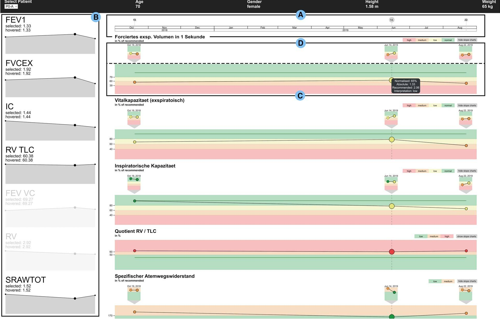

Designing Interactive Visualizations for Analyzing Chronic Lung Diseases in a User-Centered Approach

Venue. JAMIA (2024)
Materials.
DOI
Abstract. Medical practitioners analyze numerous types of data, often using archaic representations that do not meet their needs. Pneumologists who analyze lung function exams must often consult multiple exam records manually, making comparisons cumbersome. Such shortcomings can be addressed with interactive visualizations, but these must be designed carefully with practitioners’ needs in mind.A workshop with experts was conducted to gather user requirements and common tasks. Based on the workshop results, we iteratively designed a web-based prototype, continuously consulting experts along the way. The resulting application was evaluated in a formative study via expert interviews with 3 medical practitioners.Participants in our study were able to solve all tasks in accordance with experts’ expectations and generally viewed our system positively, though there were some usability and utility issues in the initial prototype. An improved version of our system solves these issues and includes additional customization functionalities.The study results showed that participants were able to use our system effectively to solve domain-relevant tasks, even though some shortcomings could be observed. Using a different framework with more fine-grained control over interactions and visual elements, we implemented design changes in an improved version of our prototype that needs to be evaluated in future work.Employing a user-centered design approach, we developed a visual analytics system for lung function data that allows medical practitioners to more easily analyze the progression of several key parameters over time.
Link to this page: